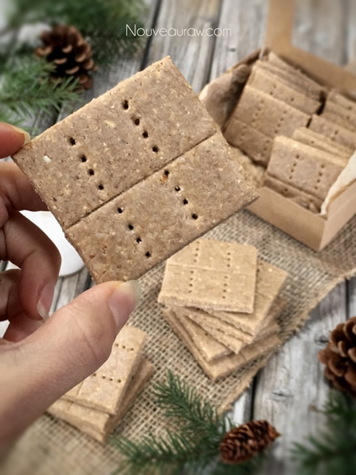
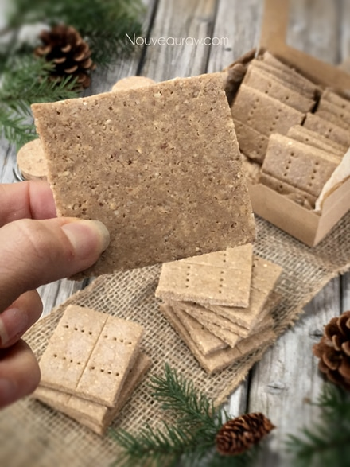
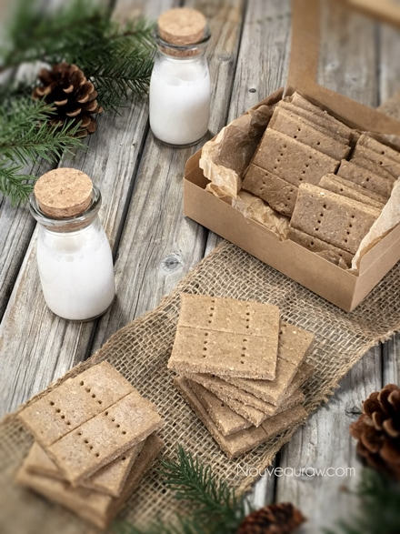
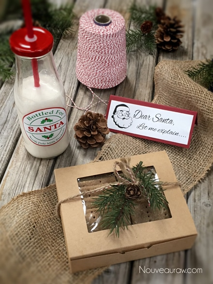

Graham Crackers

~ raw, vegan, gluten-free ~
I first made these crackers back in March 2011. They have been enjoyed throughout the years, but I thought I would update the photos. Crackers with a new wardrobe. :)
I will say that they do have a sweet hint of graham cracker to them. They have more of a dense texture but ooh so yummy. The base is made from cashew flour. I have also used almond which works as well but in the end, cashew is my favorite.
This recipe does make a lot… 50 crackers! If this is too much for you at one time, you can always cut the recipe in half. Food doesn’t a problem disappearing around here. hehe
I used 1 3/4 cups of maple syrup as the main sweetener. It may seem like a lot but that breaks down to 0.6 teaspoons per cracker. Not so bad when you look at it that way.
The components found in maple syrup include water, protein, fat, carbohydrates, and sugars. In the department of minerals, it contains calcium, iron, magnesium, phosphorus sodium, potassium, and zinc. Vitamins such as thiamin, riboflavin, niacin, and B6 are also found in maple syrup. We can’t forget the astounding 54 antioxidants that it has as well.
Another important ingredient used is cinnamon. Cinnamon is antimicrobial and also restrains the growth of fungi and yeast, making it potentially useful in the treatment of allergies. Cinnamon also holds promises for people with diabetes, because it appears to stimulate insulin activity thereby helping the body to process sugar more efficiently. Always do your best in using nutrient-dense ingredients… we want to impact the body as well as the taste buds. :)
I hope you enjoy this recipe. Many blessings, amie sue
Yields 50 (2×2”) crackers
Preparation:
- Mix the cashew flour, oat flour, salt, and cinnamon together in medium size bowl by hand.
- Add the water, maple syrup, and vanilla. Mix well, using your hands if needed.
- Spread the batter on the teflex sheet that comes with the dehydrator, about 1/8″ – 1/4″ thick. Score the crackers into the desired shape and size.
- Dehydrate at 145 degrees (F) for 1 hour, then reduce to 115 (F) degrees for 4 hours.
- Once dry enough, transfer to the mesh sheet that comes with the dehydrator to help speed up the drying process.
- To do this, place a mesh screen on top of the crackers, followed by a dehydrator tray, creating a sandwich with the crackers in the center.
- Flip the trays over, remove the dehydrator tray, and now peel off the teflex sheet.
- The bottom of the crackers should be facing up now.
- Dehydrate for another 6 hours or until dry and separate the pieces.
- Keep well sealed, at room temperature until ready to serve.
- Recipe inspired by: Matthew Kenney
This is what the front of the cracker looks like. I lightly scored
the center, just like real graham crackers, so they can pop apart.

Here is the back, just showing you that I didn’t score all the way
through the cracker.

They taste so yummy with almond milk.

Santa thinks so too!

© AmieSue.com